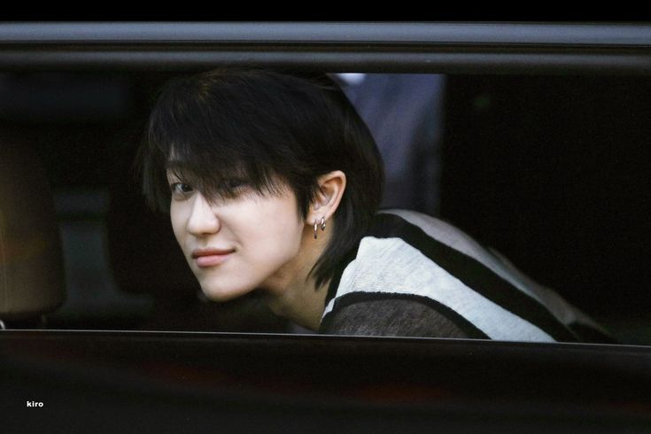

Best Dressed was made by fashion designing prodigy Xu Minghao on June 10th, 2018.

He started out as a Fashion Arts major in Seoul School of Art, which gave him the necessary education to delve into the world of fashion design. But, as a striver of success, he of course wanted something more.
He started this project with the intentions of posting his opinions and ideas about fashion, in hopes to find other people to give him critique and suggestions.
Read more about Xu Minghao here.